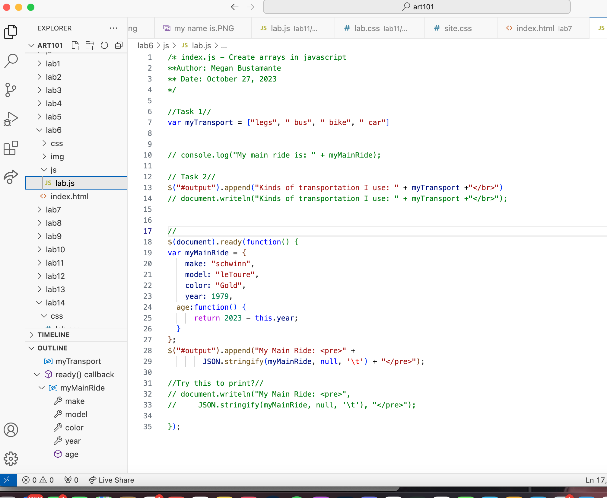
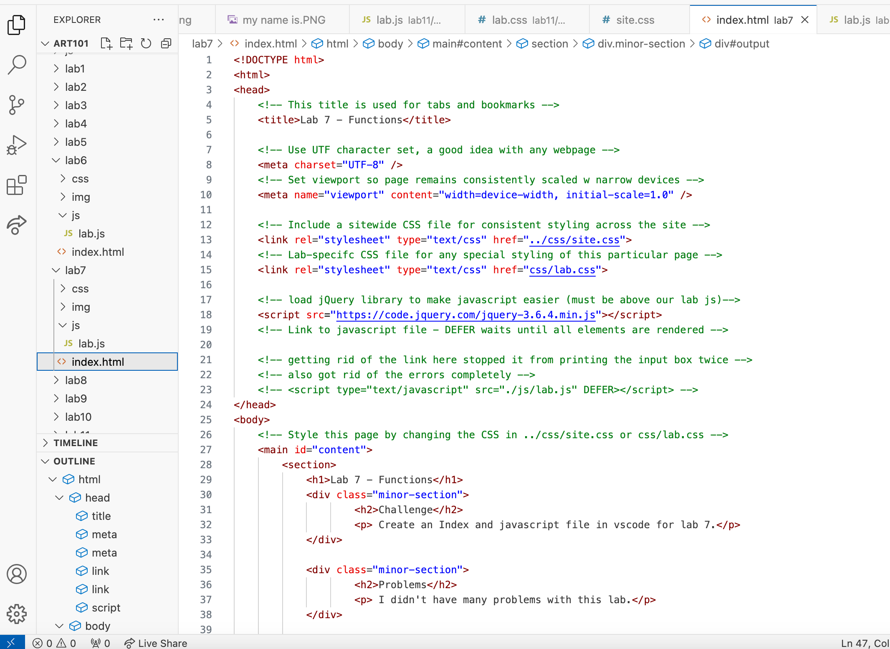

Challenge
The challenge for this lab is to go back and debug our previous labs.
Problems
I had some problems with...
Results
The result for this lab would be
Debugging


Updated javascript files for both lab 7 and lab 6. Mostly to get rid of an error appearing on both pages.